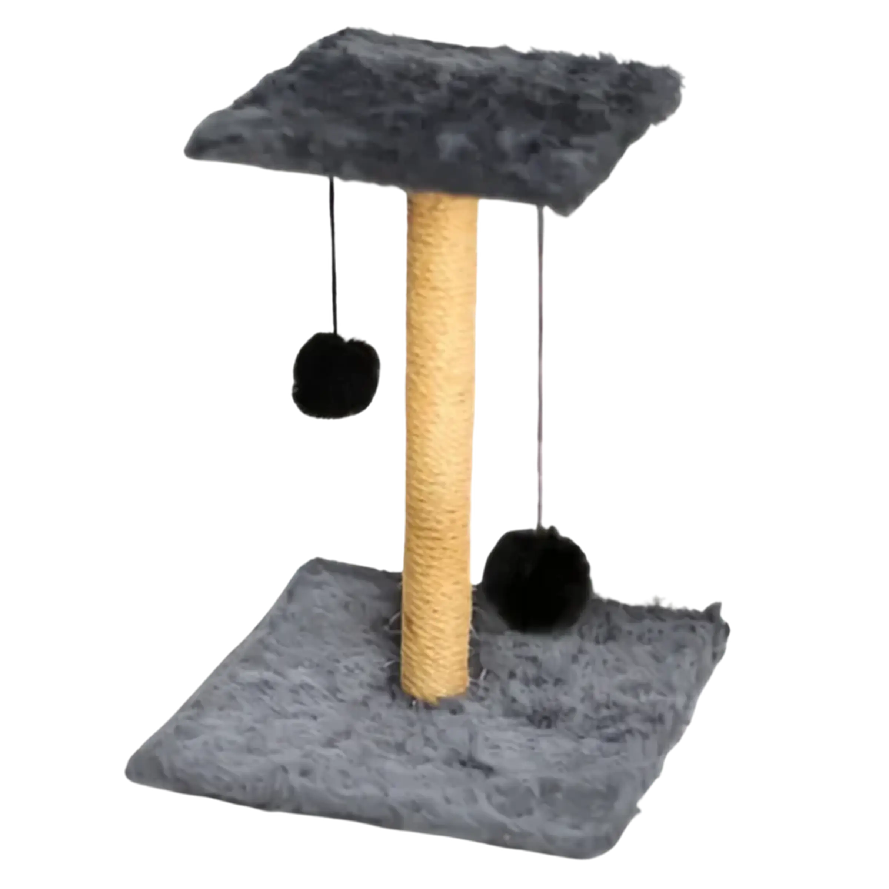

Arranhador para Gato

Detalhes do Produto
- Produto: Arranhador para Gato
- Marca: Ita Pets
- Material: Sisal e madeira
- Indicação: Gatos de todas as idades
- Tamanho: Médio
- Altura: 50 cm
- Uso: Diversão e cuidado das unhas
- Características: Resistente, estável e fácil de montar
- Preço: R$ 69,90
Arranhador desenvolvido para estimular o comportamento natural dos gatos, ajudando no desgaste das unhas e proporcionando momentos de diversão.